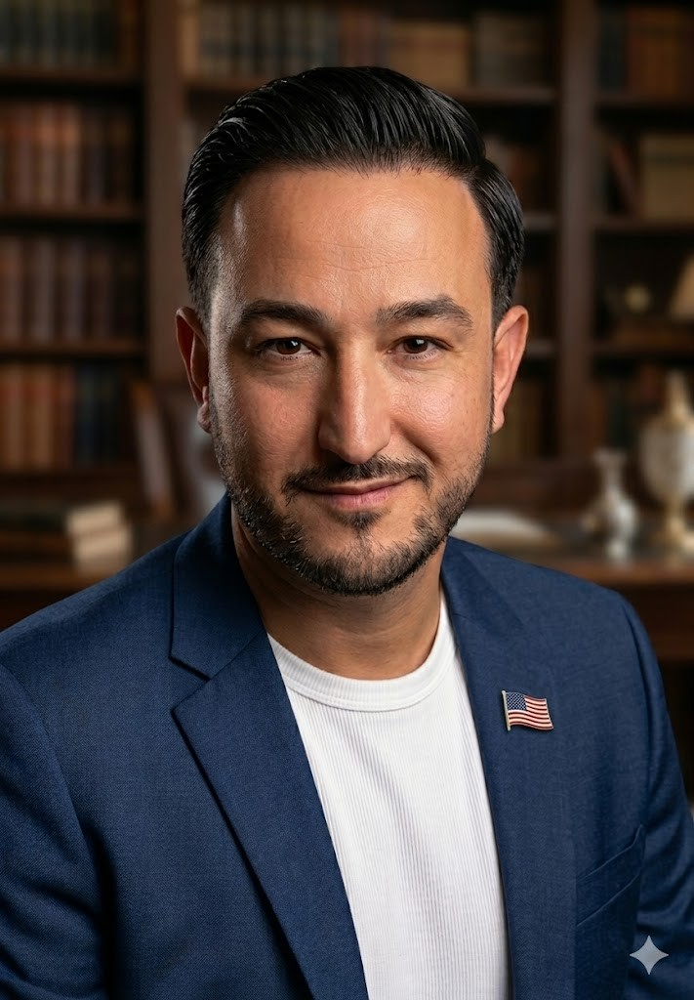

Meet Pete Quintero
Founder of SoFlo Elite Notary & Business Services LLC
My name is Pedro Quintero, but most people know me as Pete.
For more than 19 years, I built my career in the banking industry, helping individuals, families, and business owners navigate important financial decisions. Throughout that journey, I spent over seven years serving as a notary public, witnessing and notarizing thousands of documents that carried significant legal and financial importance.
Being a notary is about much more than applying a stamp and signature. It requires attention to detail, a thorough understanding of document execution requirements, and a commitment to ensuring every signing is handled professionally and correctly.
Over the years, I worked with a wide range of documents, including mortgage closings, home equity lines of credit (HELOCs), refinance packages, business loan agreements, powers of attorney, affidavits, trust documents, and other legal and financial instruments. These experiences provided me with firsthand knowledge of the importance of accuracy, compliance, confidentiality, and customer service.
Why I Founded SoFlo Notary
I founded SoFlo Elite Notary & Business Services LLC because I recognized the need for reliable, knowledgeable, and professional notary services that clients can trust. Too often, individuals and businesses are left searching for someone who understands not only the notarization process but also the significance of the documents being signed.
The Banking Difference
My banking background gives me a unique perspective that many notaries simply do not have. Having worked directly with financial institutions, lending documents, and complex transactions for nearly two decades, I understand the level of care and precision required when handling critical paperwork.
Our Mission
At SoFlo Elite Notary & Business Services LLC, our mission is simple: provide dependable, professional, and convenient notary and business services while treating every client with integrity, respect, and attention to detail.
Whether you are signing real estate documents, business agreements, powers of attorney, or personal legal documents, you can have confidence knowing your documents are being handled by someone with years of experience in both banking and notarization.
Because when it comes to important documents, experience matters.
Founder & Managing Member
SoFlo Elite Notary & Business Services LLC